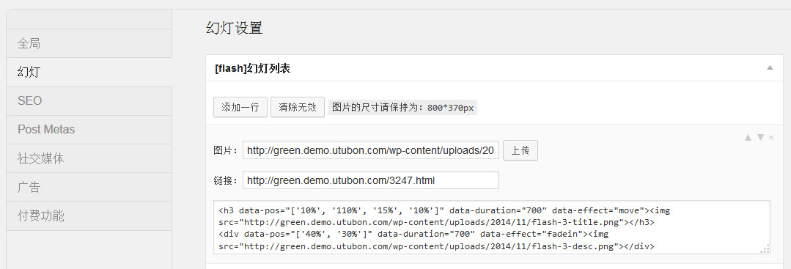

在后台“外观-Admin Options-幻灯”中设置。
幻灯只显示在网站首页文章列表的最前面，由一组幻灯片组成，每一个幻灯片有三个选项，第一个是图片（必填），第二个是链接，第三个是代码。

界面中你可以对幻灯的位置进行调整，可以对其进行删除等，这些调整必须在点完保存按钮之后才生效。
幻灯的第三个选项要你手动填写代码，用来显示在幻灯片的图片上面，那么怎么填写呢？在界面的下方有两个代码块模板，分别介绍了两种形式，一种是移动出现在幻灯区域中，一种是渐现的方式。这两种效果都可以在演示站看到。下面具体讲一下参数。
<div data-pos="['23%', '110%', '23%', '42%']" data-duration="700" data-effect="move"><img data-lazy-src="images/add.jpg"/></div>
上面是一个从右侧飞入幻灯片内的效果。data-pos是指该内容的位置，前两个参数对应起始的top,left值，你可以看到起始值为距离顶部23%距离左边框110%，其实这个时候内容处于可视区域的右边，是不可见的；后面两个值分别对应最终的位置，也是对应top,left，最终位置top没有变，left变为42%，整个效果就是从可视区域的右边飞入到42%的位置。data-duration是指整个飞入过程的消耗时间，以毫秒计算，值越小飞入速度越快。data-effect是效果，move就是飞入。data-lazy-src是这个幻灯片的整个图片。div内的内容随意，可以是文字，也可以是图片，甚至混搭。
<div data-pos="['29%', '46%']" data-duration="700" data-delay="500" data-effect="fadein"><img data-lazy-src="images/add.jpg"/></div>
上面实现了一个渐现的效果，和前一段代码不同之处有两个，一个是data-effect=fadein，另一个是data-delay，data-delay是这个幻灯片执行完成之后，还要再拖延的时间，防止显示出来就一闪而过。
在代码区域除了使用div之外，你也可以使用h3，参数都是一样的，h3表示标题，显示的字比较大，在pad/phone上也会显示（div被隐藏）。默认情况下这些字都是白色的，如果你要修改颜色，可以直接在div内加入style，也可以加class自己写css来控制。
你可以在前台使用PHP调用这一组幻灯，代码如下：
global $admin_options;
$flash_list = $admin_options['flash'];
if(!empty($flash_list))foreach($flash_list as $flash){
$img_src = $flash[0];
$flash_link = trim($flash[1]);
$flash_code = stripslashes($flash[2]);
}
上面的代码帮你调用出来了后台设置的值，如果你不使用我们主题自带的幻灯效果，那么利用这些值你可以换成其他的插件来实现幻灯。